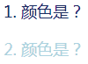
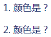
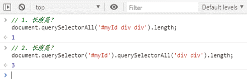
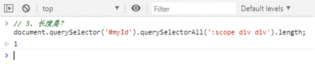

首页 > 编程笔记
CSS后代选择符（空格）详解
后代选择符是非常常用的选择符，随手抓取一个线上的 CSS 文件就可以看到这个选择符，它从 IE6 时代就开始被支持了。
后代选择符以空格作为分隔符，从前往后的选择器，只要匹配 DOM 由外而内的层级关系，就会匹配最后一个选择器对应的元素。
例如，选择器 article p a 一定是匹配祖先元素中存在 <p> 元素和 <article> 元素的 <a> 元素，即使嵌套层系很深或者标签重复嵌套，也是可以匹配的。
可以说，后代选择符匹配的可能性非常大，因此，对于那些需要长期迭代与维护的项目，并不建议后代选择符的最后一个选择器使用标签选择器，尤其是比较常用的标签，因为后期维护的时候，DOM 内容添加和层级变动很常见，极有可能出现不希望出现的 HTML 元素匹配。
所以，请避免出现如下的选择器代码：
但是，如果把这里的类选择器换成后代选择符，就没这么简单了，很多人会搞错最终呈现的文字颜色。
很多人会搞错的原因就在于他们对后代选择符有错误的认识。当包含后代选择符的时候，整个选择器的优先级与祖先元素的 DOM 层级没有任何关系，这时要看落地元素的优先级。
在本例中，落地元素就是最后的 <p> 元素。两个 <p> 元素彼此分离，非嵌套，因此 DOM 层级平行，没有先后之分。
再看选择器的优先级，.lightblue p 和 .darkblue p 出现了一个类选择器（数值 10）和一个标签选择器（数值 1），选择器优先级数值一样。此时就要看它们在 CSS 文件中的位置，遵循“后来居上”的规则，由于 .darkblue p 位置靠后，因此 <p> 都是按照 color:darkblue 进行颜色渲染的，于是，最终 1 和 2 的文字颜色都是深蓝色。
第一条语句的返回结果符合我们的预期。为何下一条语句返回的 NodeList 的长度是 3 呢？其实这很好解释，原因是 CSS 选择器是独立于整个页面的！
什么意思呢？假如你在页面一个层级很深的 DOM 元素中写上：
querySelectorAll 中的选择器同样有全局特性。document.querySelector ('#myId').querySelectorAll('div div') 的意思是：查询 #myId 元素的子元素，选择同时满足整个页面中 div div 选择器条件的所有 DOM 元素。
此时我们再仔细看看原始的 HTML 结构会发现，在全局视野下，div.lonely、div. outer、div.inner 都满足 div div 这个选择器条件，于是，最终返回的长度为 3。如果我们在浏览器控制台输出所有 NodeList，也是这个结果：
其实，要想让 querySelectorAll 后面的选择器不是全局匹配，也是有办法的，可以使用 :scope 伪类，其作用就是让 CSS 选择器的作用域限定在某一范围内。例如，可以将上面的例子改成下面这样：
后代选择符以空格作为分隔符，从前往后的选择器，只要匹配 DOM 由外而内的层级关系，就会匹配最后一个选择器对应的元素。
例如，选择器 article p a 一定是匹配祖先元素中存在 <p> 元素和 <article> 元素的 <a> 元素，即使嵌套层系很深或者标签重复嵌套，也是可以匹配的。
可以说，后代选择符匹配的可能性非常大，因此，对于那些需要长期迭代与维护的项目，并不建议后代选择符的最后一个选择器使用标签选择器，尤其是比较常用的标签，因为后期维护的时候，DOM 内容添加和层级变动很常见，极有可能出现不希望出现的 HTML 元素匹配。
所以，请避免出现如下的选择器代码：
.cs-x div { display: flex; }
.cs-x a { color: darkblue; }
以上就是后代选择符的基本特性，很容易理解，也很常见。很多人可能觉得已经掌握了，是这样吗？有些东西即使天天见，也不见得真的很了解它。对CSS后代选择符可能的错误认识
看这个例子，HTML 代码和 CSS 代码分别如下，请问文字的颜色是什么。
<div class="lightblue">
<div class="darkblue">
<p>1. 颜色是？</p>
</div>
</div>
<div class="darkblue">
<div class="lightblue">
<p>2. 颜色是？</p>
</div>
</div>
.lightblue { color: lightblue; }
.darkblue { color: darkblue; }
这个问题比较简单，因为 color 具有继承特性，所以文字的颜色由 DOM 层级最深的赋色元素决定，因此 1 和 2 的颜色分别是深蓝色和浅蓝色，如下图所示。

图 1 类选择器与文字颜色
图 1 类选择器与文字颜色
但是，如果把这里的类选择器换成后代选择符，就没这么简单了，很多人会搞错最终呈现的文字颜色。
<div class="lightblue">
<div class="darkblue">
<p>1. 颜色是？</p>
</div>
</div>
<div class="darkblue">
<div class="lightblue">
<p>2. 颜色是？</p>
</div>
</div>
.lightblue p { color: lightblue; }
.darkblue p { color: darkblue; }
早些年我拿这道题做测试，结果全军覆没，无人答对，大家都认为 1 和 2 的颜色分别为深蓝色和浅蓝色。实际上正确答案是，1 和 2 全部都是深蓝色，如下图所示。

图 2 后代选择符与文字颜色
图 2 后代选择符与文字颜色
很多人会搞错的原因就在于他们对后代选择符有错误的认识。当包含后代选择符的时候，整个选择器的优先级与祖先元素的 DOM 层级没有任何关系，这时要看落地元素的优先级。
在本例中，落地元素就是最后的 <p> 元素。两个 <p> 元素彼此分离，非嵌套，因此 DOM 层级平行，没有先后之分。
再看选择器的优先级，.lightblue p 和 .darkblue p 出现了一个类选择器（数值 10）和一个标签选择器（数值 1），选择器优先级数值一样。此时就要看它们在 CSS 文件中的位置，遵循“后来居上”的规则，由于 .darkblue p 位置靠后，因此 <p> 都是按照 color:darkblue 进行颜色渲染的，于是，最终 1 和 2 的文字颜色都是深蓝色。
对JavaScript中后代选择符可能的错误认识
直接看例子，HTML代码如下：
<div id="myId">
<div class="lonely">单身如我</div>
<div class="outer">
<div class="inner">内外开花</div>
</div>
</div>
下面使用 JavaScript 和后代选择符获取元素，请问下面两条语句的输出结果分别是什么呢？
// 1. 长度是？
document.querySelectorAll('#myId div div').length;
// 2. 长度是？
document.querySelector('#myId').querySelectorAll('div div').length;
很多人会认为这两条语句返回的长度值都是 1。实际上，它们返回的长度值分别是 1 和 3，下图是在浏览器控制台测试出来的结果。

图 3 使用JavaScript和后代选择符获取的元素的长度
图 3 使用JavaScript和后代选择符获取的元素的长度
第一条语句的返回结果符合我们的预期。为何下一条语句返回的 NodeList 的长度是 3 呢？其实这很好解释，原因是 CSS 选择器是独立于整个页面的！
什么意思呢？假如你在页面一个层级很深的 DOM 元素中写上：
<style>
div div { }
</style>
那么整个网页（包括父级）中只要是满足 div div 这种后代关系的元素，就会全部被选中，这点大家都清楚。querySelectorAll 中的选择器同样有全局特性。document.querySelector ('#myId').querySelectorAll('div div') 的意思是：查询 #myId 元素的子元素，选择同时满足整个页面中 div div 选择器条件的所有 DOM 元素。
此时我们再仔细看看原始的 HTML 结构会发现，在全局视野下，div.lonely、div. outer、div.inner 都满足 div div 这个选择器条件，于是，最终返回的长度为 3。如果我们在浏览器控制台输出所有 NodeList，也是这个结果：
NodeList(3) [div.lonely, div.outer, div.inner]这就是对 JavaScript 中后代选择符可能的错误认识。
其实，要想让 querySelectorAll 后面的选择器不是全局匹配，也是有办法的，可以使用 :scope 伪类，其作用就是让 CSS 选择器的作用域限定在某一范围内。例如，可以将上面的例子改成下面这样：
// 3. 长度是？
document.querySelector('#myId').querySelectorAll(':scope div div').length;
则最终返回的结果就是 1，如下图所示。

图 4 使用:scope 伪类获取的元素的长度
图 4 使用:scope 伪类获取的元素的长度
关注公众号「站长严长生」，在手机上阅读所有教程，随时随地都能学习。内含一款搜索神器，免费下载全网书籍和视频。

微信扫码关注公众号